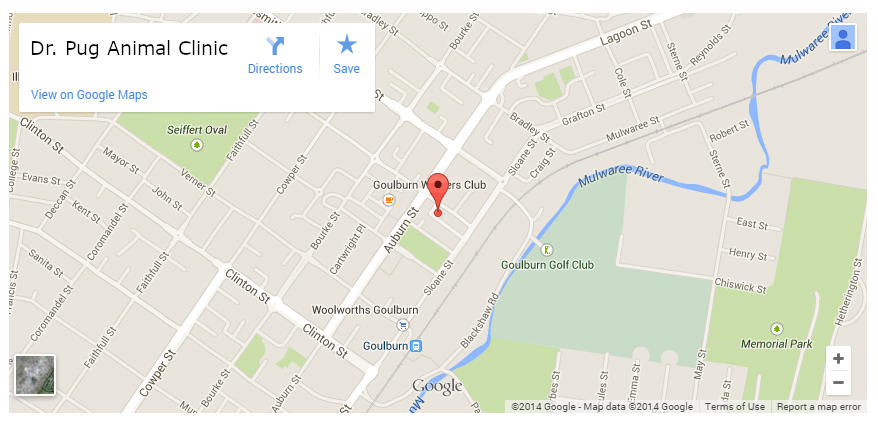

{% extends "layout.html" %}
{% block title %}
Doctor Bios
{% endblock %}
{% block nav %}
{% endblock %}
{% block main %}
Access

Address:
3494 Animal Ct
Somewhere, Some Place 1234-567
Parking available
Subway:
Take the Imatrain Line to Goulburn Station and
follow Sloane St. until you see Animal Ct.
8 minute walk
{% endblock %}